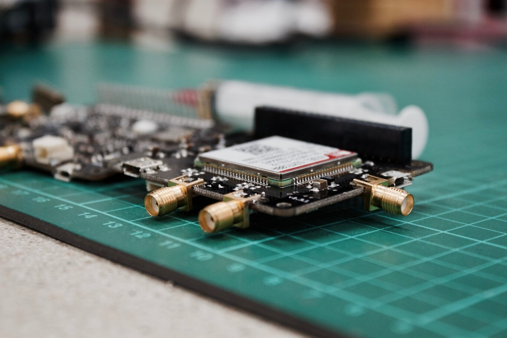

Edge Computing y Fog Computing: parecidos y diferencias para tratar los datos cerca de donde se producen
Los datos de Statista que a fines de 2018 había 22.000 millones de dispositivos conectados en uso en todo el mundo y que para 2030 habrá cerca de 50.000 millones: ordenadores, teléfonos, coches, relojes, neveras, aspiradoras…
Todos estos dispositivos generan y comparten muchos datos. Pero, ¿dónde se gestiona toda esta información? ¿Dónde se almacenan, tratan y analizan todos los datos? Se trata de un mercado en claro crecimiento, como lo demuestra la reciente alianza entre Microsoft y ARM en la materia. De hecho, los pronósticos de la consultora Market Reports hablan de que el mercado mundial de análisis de IoT pase de los 7.200 millones de dólares en 2017 a los 27.800 millones en 2022. Los factores clave que impulsan el mercado de análisis de IoT incluyen un enorme aumento en la generación de datos de IoT debido al creciente despliegue de dispositivos de IoT y la necesidad de análisis y automatización avanzados para que las empresas sigan siendo competitivas.
Para poder analizar, pues, toda esa gran cantidad de datos hay dos propuestas: el Fog Computing y el Edge Computing. Ambos modelos comparten muchas similitudes pero también tienen algunas importantes diferencias.
No te vayas lejos
A grandes rasgos, podemos decir que ambas opciones permiten enviar datos a plataformas analíticas que están ubicadas en la misma red o muy cerca de donde se originaron los datos.
Una de las industrias en las que más aplicaciones se están desarrollando del IoT es en la fabricación. Imaginemos un posible escenario, en el que una fábrica tiene diversos sensores para saber qué tipo de materiales están entrando en sus instalaciones, así como otros en las líneas de producción. Con estos datos, se puede decidir qué tipo de producto fabricar y si, en algún momento, hay que cambiar alguna decisión porque los embalajes no estén preparados o porque los lineales destinados a esta producción estén llegando ya al límite de su capacidad.
Hay que tener en cuenta que hablamos de instalaciones donde se produce una gran cantidad de datos y de forma constante. Trasladar toda esta gran cantidad de información a la nube podría disparar los costes. Mientras, si el procesamiento se realiza donde se producen los datos y solo se envía la información relevante a la nube los costes pueden mantenerse más controlados.
El tratamiento de todos estos datos que proceden de todos estos sensores se realizará lo más próximo posible al lugar donde se están produciendo en lugar de tener que viajar hasta la nube y volver. Y, para ello, se tienen dos opciones: el Fog Computing y el Edge Computing.
Ambas propuestas quieren aprovechar las capacidades de computación dentro de una red local para llevar a cabo tareas de computación que normalmente se habrían llevado a cabo en la nube. ¿Las ventajas? Poder aprovechar de la potencia del cloud computing, pero eliminando algunos de sus inconvenientes. Al realizarse todo el tratamiento y análisis de los datos muy próximo a donde se producen hay menos latencia y menos consumo, puesto que el viaje que realiza esta información es más breve. Y, con ello, también se reduce el coste.
Pensemos, por ejemplo, en una cámara de seguridad. Si en lugar de tener que enviar constantemente el vídeo a una plataforma en la nube solo envía aquellos fotogramas en los que se pueda detectar u observar un comportamiento sospechoso o anómalo, el ancho de banda y la capacidad de almacenamiento que necesitaremos será mucho menor.
El quid de la cuestión está en el dónde
La gran diferencia entre el Fog y el Edge Computing está en dónde se produce ese procesamiento de los datos.
En términos generales, podemos decir que, en la propuesta del Edge Computing, la actividad se realiza en los propios dispositivos o en un dispositivo al que se conectan y que hace de puerta de enlace. Mientras, la computación en la niebla traslada las actividades a los procesadores que están conectados a la LAN o al propio hardware de la LAN para que puedan estar físicamente más lejos de los sensores.
La computación en la niebla fue un término acuñado por Cisco en 2014. Podríamos definirlo como una arquitectura informática descentralizada donde los datos, las comunicaciones, el almacenamiento y las aplicaciones se distribuyen entre la fuente de datos y la nube. Es decir, es una arquitectura horizontal que comparte recursos y servicios almacenados en cualquier lugar de la nube con dispositivos de Internet de las cosas.
Con el Edge Computing la arquitectura se acerca aún más al procesamiento de la fuente de datos sin tener que enviar los datos a una nube remota u otros sistemas centralizados para su procesamiento. Esto mejora la velocidad y el rendimiento del transporte de datos, así como los dispositivos y aplicaciones, al eliminar la distancia y el tiempo para enviar datos a fuentes centralizadas.
A favor y en contra de uno y otro
Cuando se opta por el Edge Computing, los datos viajan menos por la red, por lo que se puede aumentar la seguridad de los mismos y de su tratamiento. Además, al hacer este análisis prácticamente en el dispositivo que genera los datos, se gana en rapidez, lo que puede provocar un mejor rendimiento y una toma de decisiones más rápida.
Mientras, en el modelo Fog se permite que, dentro de ese núcleo que va a realizar el tratamiento de los datos, puedan combinarse también otras fuentes de datos. Esto, además, hará que el punto de tratamiento sea más capaz, puesto que acepta muchos dispositivos. Sn embargo, esto también hará que sea necesaria más infraestructura para poder implementar un sistema Fog Computing y que los costes sean superiores.
La otra cara de la moneda del Edge Computing estaría en encontrar el equilibrio entre mantener los datos en el borde y llevarlos a una nube central cuando sea necesario. Cabe señalar, además, que los conjuntos de datos que requieren algoritmos más sofisticados se manejan mejor en la nube, mientras que los procesos analíticos más simples se mantienen mejor en el borde.
Cuestión de segundos
Cuando se apuesta por el Fog Computing o el Edge Computing uno de los objetivos principales es reducir de forma drástica el tiempo que pasa entre que los datos viajan, se analizan y se devuelven, especialmente en comparación con la opción del Cloud Computing.
No son concebidas como alternativas a la informática en la nube, sino más bien como un complemento, con la optimización del rendimiento como su principal ventaja.